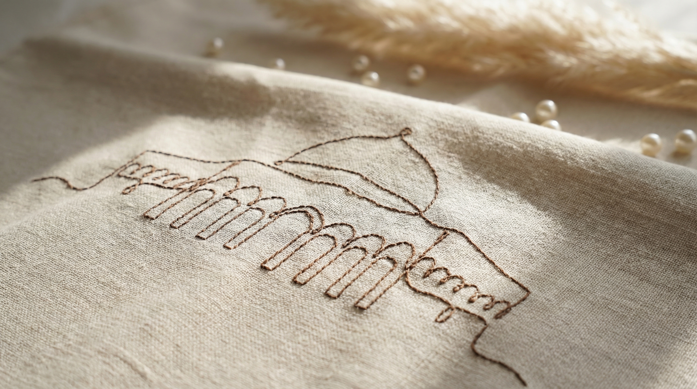
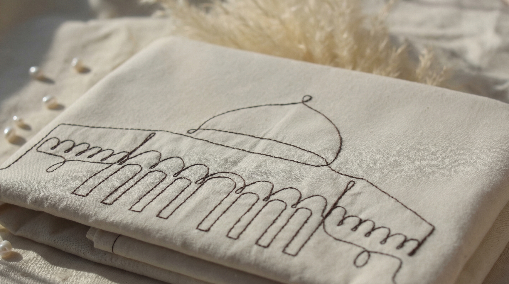
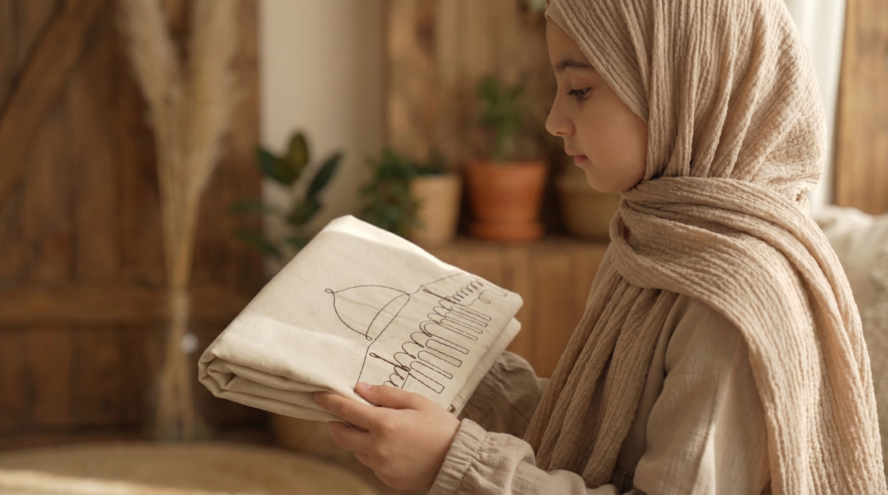

Bir seccade, yerleştiği yerden önce
niyete yer açar.

Feyz seccadesi — keten dokuda, serili hali.
Mescid-i Aksa'yı hatırlatan bu ince çizgi, bir süs değil; sessiz bir işarettir. Nakışın dili gösterişe değil, manaya yakışacak kadar ölçülüdür.
Kudüs'ü anmak bazen yüksek sesle değil, böyle küçük bir hatırlayışla olur. Secde anında gözler kapanmadan önce o çizgiyi gören eller, bir şeyin farkına varır.
Nakış çizgisi: Mescid-i Aksa'ya bir hatırlayış.
Solda: nakış yakın plan. Sağda: katlı hali, doğal ışıkta.
Sade bir yüzey, dikkati dağıtmadan kalbi toplar.

Bu parçada her şey az ve yerindedir: doğal tonlar, dingin bir doku, derli toplu bir bitiş. Seccade mekâna karışır; ibadet vaktine engel olmaz, ona alan bırakır.
Keten, zamanla yumuşayan bir kumaştır. Her namaz, onu biraz daha sana benzetir.
Yakın planlarda görünen dikiş ve dokuma, uzun süre eşlik etmek için vardır.
Her desen, bir kâğıtta başlar.
Bu çizgi oradan geliyor.
İnce iş, az söz.
Her bakışta aynı şeyi söylemez — ama aynı hissi bırakır.
Feyz Collection büyüyor — yavaş ve dikkatle